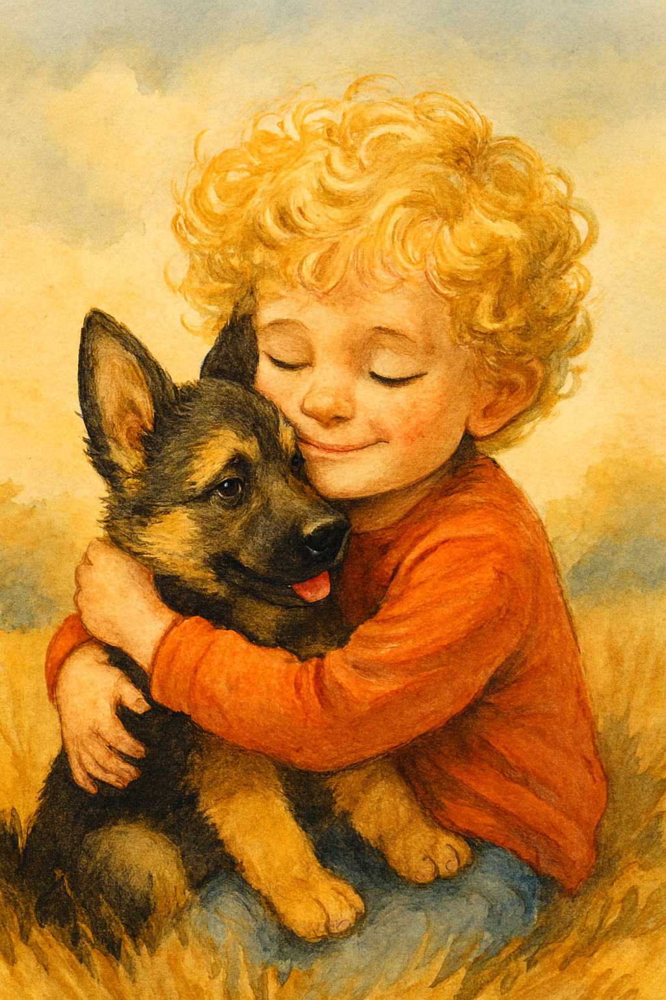

Koda and Lukey: A Friendship Forged in Loyalty
Posted on November 6, 2025 · Category: TAOLB Universe Stories

Twelve year old Lukey Buke races across the backyard, his backwards ball cap bouncing with every step. Behind him, paws thunder across the grass Koda, his loyal German Shepherd, is in full chase mode. Lukey laughs, spins, and falls into the leaves, and Koda flops beside him, tail wagging like with joy.
They’ve been best friends for six years. But their story goes deeper than fetch and belly rubs.
A New Beginning
Lukey was just six when he met Koda. His old dog, Roger, had passed away that spring, and the house felt quiet in a way Lukey didn’t like. No paws on the floor. No warm snout nudging his hand. No one to curl up beside him when the world felt too big.
Then came Koda.
He was strong, alert, and already protective like he knew Lukey needed him. Two weeks after joining the family, Koda proved it. Lukey had wandered too far into the woods behind their house, chasing a paper rocket. That’s when the wolf appeared.
It was fast. Silent. Too close.
But Koda was faster.
He stepped between Lukey and the wolf, growling low and fierce. The wolf backed off. Lukey ran. Koda followed. That day, Lukey didn’t just get a dog, he got a guardian.
Loyalty Is Forever
Now, years later, Koda still watches over Lukey. Whether it’s walking to school, camping in the backyard, or curling up at the foot of the bed while Tibbin the teddy bear rests nearby, Koda is there.
Lukey doesn’t take that loyalty for granted. He knows what it means to be protected. To be loved without question. To have someone who would stand between you and danger even when you don’t see it coming.
Koda isn’t just a pet. He’s part of the story. Part of the dream. Part of the reason Lukey believes in heroes.
Because sometimes, the bravest ones walk on four legs.